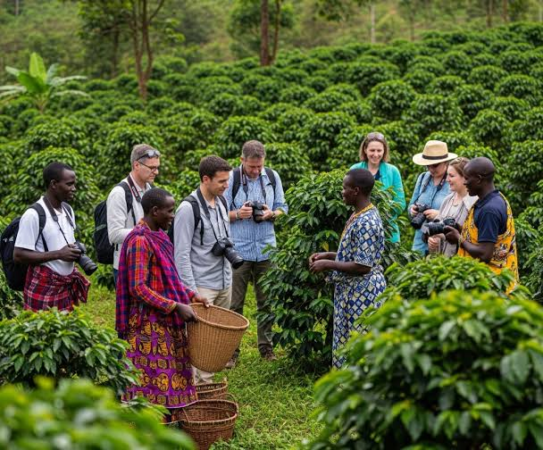
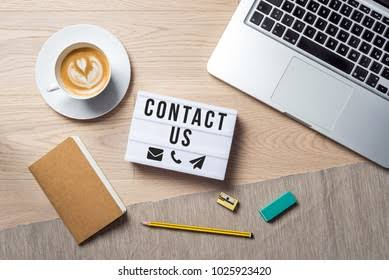
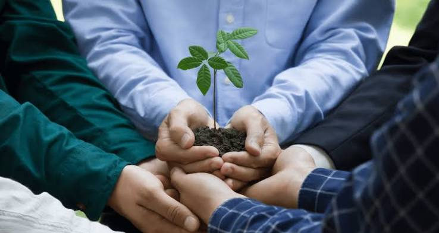
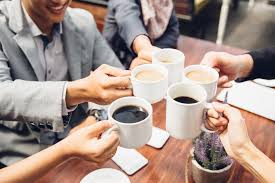

Why Brew & Bean?

Ethically Sourced
We work directly with small-scale farmers in Ethiopia, Colombia, and Rwanda to bring you the highest quality beans.

In-House Roasting
Our beans are roasted in small batches right here in Cape Town to unlock unique flavour profiles.

Sustainable Practices
From compostable packaging to waste-reduction initiatives, sustainability is at our core.

Community Hub
More than just coffee – we're a warm, welcoming space for connection, work, and relaxation.
Frequently Asked Questions
Yes! We offer oat, almond, and soy milk for all our coffee beverages at no extra charge.
Absolutely. We sell 250g and 1kg bags of all our in-house roasted beans.
Yes, we provide free high-speed Wi-Fi for all our customers.
Visit Our Coffee Shop
Come experience the Brew & Bean difference. Fresh coffee, warm atmosphere, and friendly faces.
Find Us